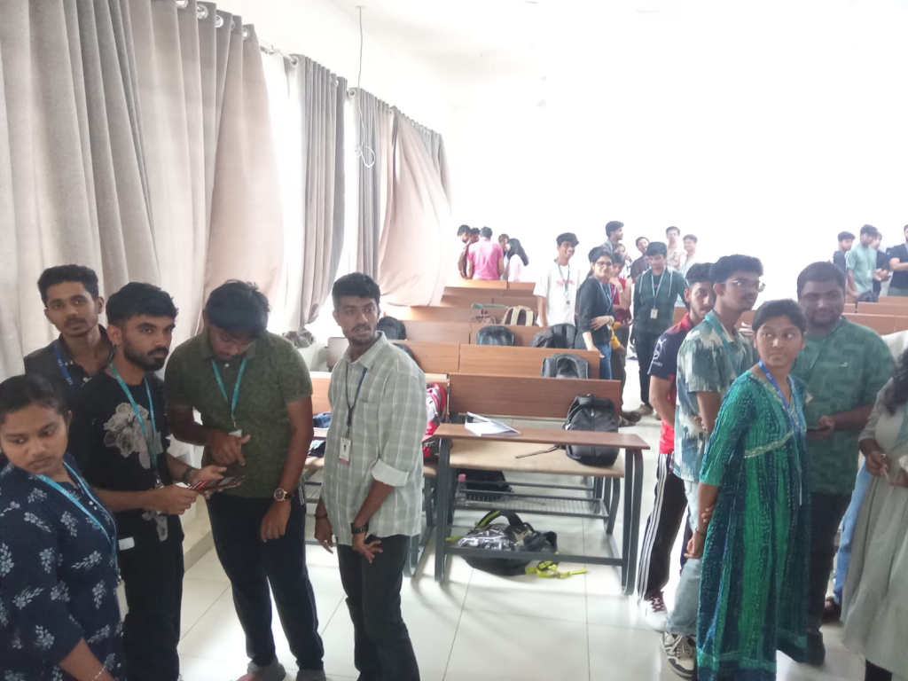
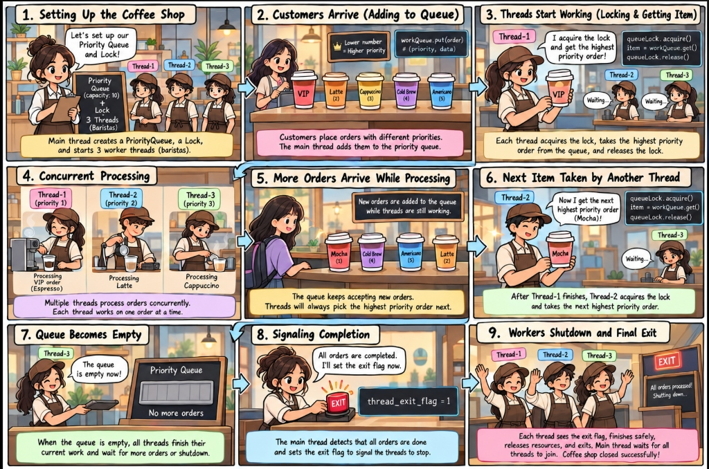
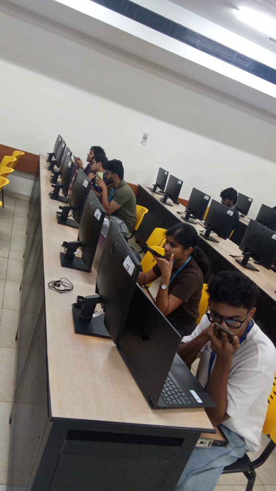
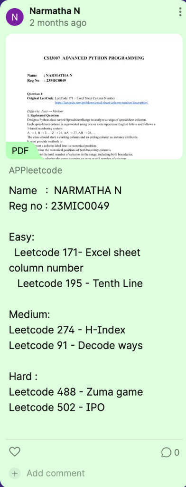
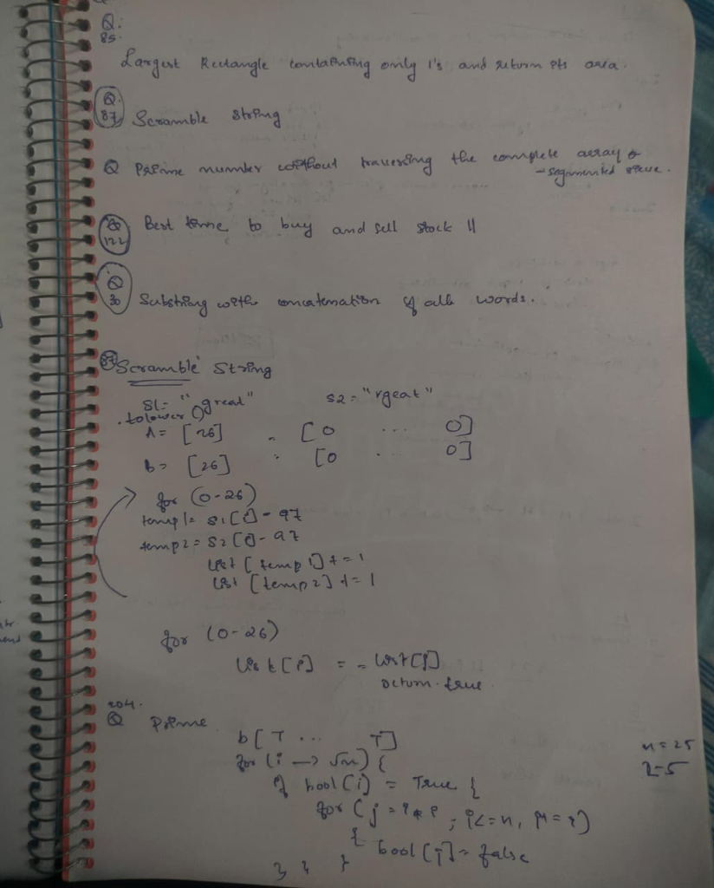
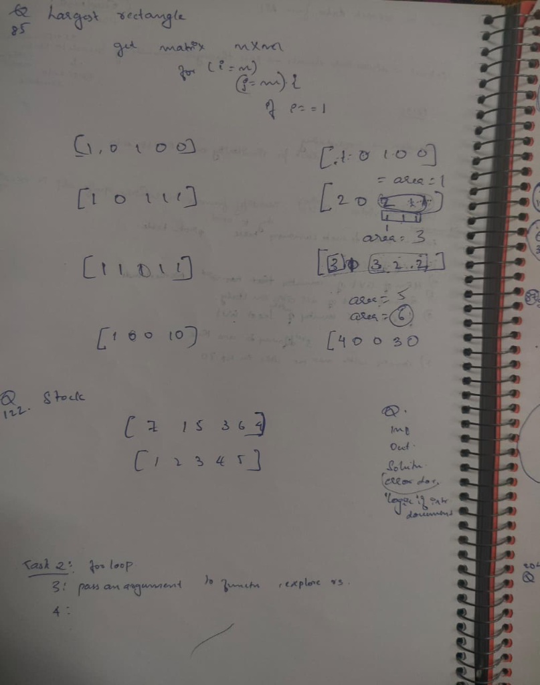

Narmatha N 23MIC0049
M.Tech Integrated (Computer Science) • VIT Vellore (SCOPE)
Theory
Lab
Project
Theory Modules
Deep dive into theoretical concepts, gamified library evaluations, and real-world assistive applications.
How to Explore Theory (Domain 01)
Explore our official 8-Module Course Syllabus & COs, review our 10 Comparative Matrix Questions with instant search, interactive Library Quizizz activity, assistive IoT Application for Fine Motor Impairment, our Hachoir Binary Case Study, and real Classroom Reflections.
Approved Course Syllabus • Course Outcomes & Bloom's Taxonomy Mapping
Official 8-module academic syllabus for CSI3007 Advanced Python Programming, detailing Module Topics, Bloom's Taxonomy cognitive classification, and direct portfolio artifact mapping.
Curriculum & Pedagogical Structure
This section outlines the exact curriculum governing the course. Each module corresponds to a specific Course Outcome (CO: 1 to CO: 8) and lists verified laboratory and theoretical artifacts completed in this portfolio. Select any Course Outcome card or use the module filter toolbar below to inspect topic distributions, Bloom's Taxonomy cognitive levels, and direct portfolio mappings.
Module 1: Data Structures
Course Outcome: CO: 1| # | Topic Description | Bloom's ID | Portfolio Mapping |
|---|---|---|---|
| 1 | Problem solving using Python Data Structures : LIST, DICT, TUPLES | Apply | Matrix Q4 & Q5 |
| 2 | SET- Functions and Exceptions | Remember | Matrix Q2 & Q7 |
| 3 | Lamda Functions and Parallel processing | Apply | Matrix Q8 Concurrency |
| 4 | MAPS Filtering - Itertools and Generators | Apply | Padlet Practice LeetCode |
Advanced Python Extra Questions & Conceptual Comparison
Comprehensive analysis answering core Python runtime, data structure, concurrency, and library mechanisms in a structured comparative table.
| # | Question / Topic | Core Concept & Explanation | Key Mechanism / Difference | Sample Code / Syntax |
|---|---|---|---|---|
| 01 | Interpreter vs. Compiler |
Compiler: Translates entire high-level source code into native machine code binary prior to execution. Interpreter: Translates and executes instructions line-by-line directly at runtime. |
|
# Python bytecode inspection:
import dis
def calc(x): return x * 2
dis.dis(calc) # Inspects bytecode
|
| 02 | append() vs. extend() | Both are in-place list methods that mutate the target list, but handle arguments with completely different granularity. |
|
a = [1, 2]
a.append([3, 4]) # -> [1, 2, [3, 4]]
b = [1, 2]
b.extend([3, 4]) # -> [1, 2, 3, 4]
|
| 03 | frozenset Attributes & Properties |
A frozenset is an immutable and hashable version of a standard Python set. Elements cannot be added, removed, or reassigned after creation.
|
|
fs = frozenset([1, 2, 3])
# Can be used as dict key:
lookup = {fs: "Validated Permissions"}
# fs.add(4) -> AttributeError!
|
| 04 | List Unpacking (with Sample Code) | Assigns individual elements of a list or iterable directly to distinct variable names in a clean, single-statement pattern without manual index indexing. |
|
nums = [10, 20, 30, 40, 50]
first, *middle, last = nums
# first = 10
# middle = [20, 30, 40]
# last = 50
|
| 05 | Deep Copy vs. Shallow Copy |
Governs how references and nested compound objects (lists within lists, nested dicts) are replicated in memory using Python's copy module.
|
|
import copy
orig = [[1, 2], [3, 4]]
shallow = copy.copy(orig)
deep = copy.deepcopy(orig)
shallow[0][0] = 99 # alters orig!
deep[0][0] = 777 # orig unaffected
|
| 06 | sorted() Function | Python built-in function that takes any iterable and returns a brand new sorted list, preserving the original sequence without mutation. |
|
words = ['python', 'c', 'javascript']
# Sort by string length ascending:
res = sorted(words, key=len)
# Output: ['c', 'python', 'javascript']
|
| 07 | List Comprehension | A concise, readable, and idiomatic syntax for transforming, mapping, and filtering collections into a new list. |
|
# Even square numbers:
evens = [x**2 for x in range(10) if x % 2 == 0]
# Output: [0, 4, 16, 36, 64]
|
| 08 | import concurrent.futures |
High-level standard library concurrency module that simplifies asynchronous task execution using worker pools and Future objects.
|
|
from concurrent.futures import ThreadPoolExecutor
def fetch(url): return len(url)
with ThreadPoolExecutor(max_workers=4) as ex:
results = ex.map(fetch, ['url1', 'url2'])
|
| 09 | zip() in List Unpacking |
zip() pairs corresponding items from multiple iterables into tuples until the shortest iterable is exhausted.
|
|
pairs = [('Alice', 95), ('Bob', 88)]
# Unzipping / unpacking pairs:
names, scores = zip(*pairs)
# names -> ('Alice', 'Bob')
# scores -> (95, 88)
|
| 10 | merge() vs. join() in DataFrame | Two fundamental Pandas functions used to combine data from two DataFrames, differing in flexibility, default keys, and default join types. |
|
import pandas as pd
# Merge on common column:
df_m = pd.merge(df1, df2, on='student_id', how='inner')
# Join using indices:
df_j = df1.join(df2, how='left')
|
Class Activity on Libraries • Quizizz
Interactive gamified review session testing mastery of core Python standard library and built-in manipulation functions.
"It was a really interesting experience and a nice way to check knowledge on Python basics like sort(), append(), reverse(), extend() etc. functions in Python."

IoT Based Assistive Application • Fine Motor Impairment
Smart assistive hardware-software ecosystem engineered in Python to empower individuals with fine motor disabilities.
Understanding Fine Motor Impairment & Technological Intervention
Fine motor impairment affects the coordination and control of small muscles in the hands, wrists, and fingers. Individuals experiencing fine motor difficulties encounter significant friction with traditional human-computer interfaces—such as small keyboards, high-precision mice, delicate mechanical switches, and touchscreen gesture controls. This project develops an adaptive Python & IoT Assistive Communication and Control Node tailored specifically to bridge this gap.
Key Challenges Addressed
- Involuntary hand tremors and finger muscle stiffness causing misclicks.
- Inability to exert precise pinch or rotational force on physical toggles.
- Fatigue resulting from sustained tactile engagement with standard input devices.
Python & IoT Technical Solution
- Adaptive Input Surfaces: Large capacitive touch plates and touch-free infrared proximity sensors sampled via MicroPython.
- Software Tremor Filter: Python moving-average and low-pass filtering algorithms that debounce tremors and register only intentional triggers.
- MQTT Telemetry & Voice Synthesis: Asynchronous MQTT event publishing to trigger home appliances, virtual assistance, and emergency dispatch.
Tremor Filtering Engine
MicroPython algorithm running on ESP32 that analyzes continuous pressure/accelerometer data to filter tremor oscillations from deliberate gestures.
MQTT Communication Broker
Lightweight paho-mqtt publish-subscribe pipeline transmitting user actions to IoT-enabled ambient appliances with zero latency.
Adaptive Python Dashboard
FastAPI web service presenting accessible, high-contrast, scalable button controls and emergency telemetry status logs.
Theory Case Study • Hachoir Binary Analysis & Parsing Library
In-depth theoretical investigation of Victor Stinner's Hachoir library — exploring safe static binary dissection, lazy stream parsing, metadata extraction, and digital forensics in Python.
Hachoir is an open-source Python library designed to parse, inspect, edit, and analyze binary files. It empowers developers, digital forensic analysts, reverse engineers, and cybersecurity professionals to examine the deep internal structure of files without executing them. Hachoir natively supports over 90 binary file formats — including native executables, raster images, audio streams, compressed archives, and office documents — making it an indispensable, versatile framework for static binary forensics.
The Problem: Binary Analysis Before Hachoir
Before Hachoir was introduced, analyzing binary file structures was notoriously painful and hazardous:
- Low-Level Pointer Hazards: Required writing custom C/C++ utilities susceptible to buffer overflows and memory corruption bugs.
- Expensive Proprietary Tools: Dependent on heavy, closed-source reverse-engineering software with rigid licensing.
- Platform Incompatibility: Tools were tightly coupled to specific operating system architectures and hard to run across Unix/Windows.
- Automation Roadblocks: Inflexible CLI wrappers made programmatic ingestion into automated security triage workflows nearly impossible.
Victor Stinner's Core Development Objectives
Victor Stinner engineered Hachoir to satisfy seven fundamental architectural goals:
- Pythonic Framework: Deliver a clean, pure-Python framework for reading and manipulating binary structures.
- Simplified Analysis: Streamline binary inspection for developers, forensic investigators, and security teams.
- Execution-Free Safety: Extract rich metadata without executing potentially malicious or weaponized payloads.
- Unified Multi-Format Support: Handle 90+ formats through a single, coherent, polymorphic interface.
- Forensics & Malware Triage: Provide first responders with safe tools for evidence preservation.
- Extensible Custom Grammars: Allow security researchers to easily define custom parsers for proprietary formats.
- Open-Source Collaboration: Foster an open-source parsing architecture easily extended by community contributions.
Classroom Learning Experience
Reflective review of classroom dynamics, pedagogical interactions, and collaborative Python learning.
"The Advanced Python Programming theory and activity sessions were extremely active, fun, and entertaining! The blend of gamified Quizizz challenges, interactive concept discussions, and collaborative peer activities turned complex Python topics like multithreading, multiprocessing, and data wrangling into an engaging and memorable experience."
Lab Practicum
Hands-on coding, multithreading storyboards, audio recording pitch, Padlet worksheets, vector database activities, and offline coding assessments.
How to Explore Lab Practicum (Domain 02)
Explore our visual Multithreading Storyboard, listen to the workstation BuildWise Audio Pitch (03:26), test our Video Frame Object Detection & Car Tracking Solution, inspect student Padlet LeetCode adaptations, Vector DB activities, and Offline Assessment Prep.
Lab Experiment Storyboard • Multithreading in Python
Visual storytelling and comprehensive theoretical connection between the Coffee Shop comic and Python's multithreading synchronization primitives.

How the Storyboard Connects to Python Multithreading Concepts
The 9-panel storyboard models a classical Producer-Consumer Concurrency Pattern in Python using
threading.Thread, queue.PriorityQueue, and threading.Lock.
Below is the exact stage-by-stage mapping of the coffee shop narrative to Python operating principles:
Environment Initialization & Thread Spawning
Story: Setting up the coffee shop with a priority queue (capacity: 10), a lock, and 3 barista worker threads.
Python Mapping: The main thread instantiates a thread-safe queue.PriorityQueue(maxsize=10), a mutual exclusion primitive queueLock = threading.Lock(), and spawns 3 worker threads targeting the barista worker function.
Producer Ingestion & Priority Tuples
Story: Customers arrive placing drink orders with priorities (VIP=1, Latte=2, Cappuccino=3, Cold Brew=4, Americano=5).
Python Mapping: The main thread acts as the Producer calling workQueue.put((priority, order_data)). Lower numerical values indicate higher priority, ensuring VIP requests jump the queue.
Critical Section & Mutex Locking
Story: Thread-1 acquires the lock, takes the highest priority order (VIP), and releases the lock while other baristas wait.
Python Mapping: Enforcing mutual exclusion: queueLock.acquire() guarantees atomic extraction of items from the shared queue, eliminating race conditions before queueLock.release().
Concurrent Processing & Task Parallelism
Story: Thread-1 brews VIP Espresso, Thread-2 steams Latte, and Thread-3 prepares Cappuccino simultaneously.
Python Mapping: Concurrency in action: each worker executes its assigned task in parallel threads, simulating independent I/O and processing workloads without blocking peers.
Asynchronous Ingestion During Execution
Story: New orders (Mocha) arrive while baristas are busy brewing.
Python Mapping: Asynchronous thread safety: producers can safely inject items into the priority queue concurrently while consumers are actively executing without corrupting shared state.
Dynamic Work Stealing & Re-Locking
Story: Thread-1 finishes and Thread-2 acquires the lock to grab the next highest priority order (Mocha).
Python Mapping: Continuous polling loop: idle threads compete fairly for the lock and immediately retrieve the next priority tuple from the queue.
Queue Depletion & Idle State
Story: The display board shows "Priority Queue: No more orders".
Python Mapping: workQueue.empty() evaluates to True. Workers detect zero pending items and enter an idle or completion-check cycle.
Termination Signaling via Exit Flag
Story: Main thread presses the red EXIT button: thread_exit_flag = 1.
Python Mapping: Safe thread termination: instead of forcefully killing threads, a shared boolean flag coordinates a cooperative exit protocol.
Worker Join & Graceful Resource Cleanup
Story: Baristas wave goodbye; "All orders processed! Shutting down... Coffee shop closed successfully!"
Python Mapping: The main thread invokes thread.join() on Thread-1, Thread-2, and Thread-3, blocking until all worker threads safely finish execution and release all operating system resources.
import threading
import queue
import time
exit_flag = 0
class BaristaThread(threading.Thread):
def __init__(self, thread_id, name, q, lock):
super().__init__()
self.thread_id = thread_id
self.name = name
self.q = q
self.lock = lock
def run(self):
print(f"Starting {self.name}")
while not exit_flag:
self.lock.acquire()
if not self.q.empty():
priority, order = self.q.get()
self.lock.release()
print(f"[{self.name}] Processing Priority {priority}: {order}")
time.sleep(1) # Simulating drink brewing
else:
self.lock.release()
time.sleep(0.1)
print(f"Exiting {self.name}")
# Main Thread: Setup Queue, Lock, and Spawning Workers
queue_lock = threading.Lock()
work_queue = queue.PriorityQueue(10)
threads = []
# Spawn 3 Barista Threads
for i in range(1, 4):
t = BaristaThread(i, f"Thread-{i}", work_queue, queue_lock)
t.start()
threads.append(t)
# Enqueue Orders with Priority (Lower number = Higher Priority)
orders = [(1, "VIP Espresso"), (2, "Latte"), (3, "Cappuccino"), (4, "Cold Brew"), (5, "Americano")]
queue_lock.acquire()
for order in orders:
work_queue.put(order)
queue_lock.release()
# Wait for queue to empty
while not work_queue.empty():
pass
# Signal termination and join threads
exit_flag = 1
for t in threads:
t.join()
print("Coffee shop closed successfully! All orders completed.")In-Lab Audio Recording Activity • BuildWise Project & Tech Stack Pitch
Hands-on laboratory session where students recorded spoken explanations and technical pitches of their BuildWise platform and tech stack at lab workstations.
"It was an activity where we were recording about our BuildWise project and tech stack."

Summary of Recorded Project Pitch • BuildWise Platform
- Project Purpose: Developing BuildWise — an AI-assisted residential CAD planning, layout optimization, and cost estimation platform engineered for first-time homebuilders and families navigating budget and space constraints.
- Technical Core & Architecture: Decoupled full-stack architecture powered by a high-performance Python (FastAPI) backend, constraint-based 2D layout generation algorithms, and multi-criteria ranking models balancing space utilization with construction budgets.
- Estimation & Compliance Engine: Automated bill-of-quantities calculation integrated with authentic Tamil Nadu Public Works Department (PWD) schedule of rates for materials and labor, alongside National Building Code (NBC 2016) structural clearance verifications.
- AI Explanation & Frontend: Interactive React + Vite frontend planning studio connected to Google Gemini API for intelligent, natural-language architectural recommendations and layout explanations.
Spoken Recording Outline • Narmatha N addressing Prof. Sharmila Banu K
Video Analytics • Multi-Car Traffic & Specific Color Object Detection
Python OpenCV implementation: 30-second multi-lane roadway video with 5–6 moving cars simultaneously active in the frame, specifically isolating and tracking a target Red Car with bounding boxes, centroid crosshairs, and frame timestamp logs.
Pivot Table Summary • Green View Index (GVI) Analysis
Interactive solutions to the 5 analytical queries from the handwritten lab sheet on MIT Treepedia urban canopy data, featuring 3 distinct Python paradigms (Pivot Tables, GroupBy, and Boolean Indexing).
Compute the arithmetic mean of street canopy coverage across all United States metropolitan areas included in the Treepedia survey (Tampa, Cambridge, Sacramento, Seattle, Miami, Boston, Los Angeles).
pivot_table with aggfunc='mean' indexed by country:# Approach 1: pd.pivot_table()
pt = pd.pivot_table(
df,
values='gvi',
index='country',
aggfunc='mean'
)
usa_avg = pt.loc['USA', 'gvi']
print(f"USA Mean GVI: {usa_avg:.2f}%")
# Output: 22.56%# Approach 2: df.groupby()
gb_avg = (
df.groupby('country')['gvi']
.mean()
.loc['USA']
)
print(f"USA Mean GVI: {gb_avg:.2f}%")
# Output: 22.56%# Approach 3: Boolean Filter
usa_mask = df['country'] == 'USA'
filtered_avg = df.loc[usa_mask, 'gvi'].mean()
print(f"USA Mean GVI: {filtered_avg:.2f}%")
# Output: 22.56%Identify the minimum Green View Index percentage for cities situated in the Netherlands (focusing on Amsterdam and Rotterdam).
aggfunc='min' per country:# Approach 1: pd.pivot_table()
pt_min = pd.pivot_table(
df,
values='gvi',
index='country',
aggfunc='min'
)
neth_min = pt_min.loc['Netherlands', 'gvi']
print(f"Netherlands Min GVI: {neth_min:.2f}%")
# Output: 16.20%# Approach 2: df.groupby()
neth_min = (
df.groupby('country')['gvi']
.min()
['Netherlands']
)
print(f"Netherlands Min GVI: {neth_min:.2f}%")
# Output: 16.20%.min():# Approach 3: Boolean Filter & .min()
neth_cities = df[df['country'] == 'Netherlands']
neth_min = neth_cities['gvi'].min()
city_name = neth_cities.loc[neth_cities['gvi'].idxmin(), 'city']
print(f"{city_name} (Netherlands Min): {neth_min:.2f}%")
# Output: Rotterdam (Netherlands Min): 16.20%Calculate the cumulative sum of Green View Index metrics for all Italian cities included in the dataset (Turin, Rome, Milan, Florence).
aggfunc='sum' over country groups:# Approach 1: pd.pivot_table()
pt_sum = pd.pivot_table(
df,
values='gvi',
index='country',
aggfunc='sum'
)
italy_sum = pt_sum.loc['Italy', 'gvi']
print(f"Italy Total GVI Sum: {italy_sum:.2f}%")
# Output: 49.90%groupby('country').sum() directly:# Approach 2: df.groupby()
italy_sum = (
df.groupby('country')['gvi']
.sum()
['Italy']
)
print(f"Italy Total GVI Sum: {italy_sum:.2f}%")
# Output: 49.90%# Approach 3: Boolean Filter & .sum()
italy_cities = df[df['country'] == 'Italy']
italy_sum = italy_cities['gvi'].sum()
print(f"Italy Total GVI Sum: {italy_sum:.2f}%")
# Output: 49.90%Identify the global city and associated nation exhibiting the lowest overall street-level canopy coverage in the international Treepedia index.
idxmin():# Approach 1: pd.pivot_table()
pt = pd.pivot_table(
df,
values='gvi',
index=['country', 'city'],
aggfunc='min'
)
country, city = pt['gvi'].idxmin()
val = pt.loc[(country, city), 'gvi']
print(f"Least: {city}, {country} ({val:.2f}%)")
# Output: Cairo, Egypt (2.10%)# Approach 2: df.groupby()
lowest = (
df.groupby(['country', 'city'])['gvi']
.min()
.sort_values()
.head(1)
)
c_name, cy_name = lowest.index[0]
print(f"Least: {cy_name}, {c_name} ({lowest.values[0]:.2f}%)")
# Output: Cairo, Egypt (2.10%)df['gvi'].idxmin() for O(N) row extraction:# Approach 3: Direct idxmin()
min_idx = df['gvi'].idxmin()
row = df.loc[min_idx]
print(f"Least: {row['city']}, {row['country']} ({row['gvi']:.2f}%)")
# Output: Cairo, Egypt (2.10%)Filter the global dataset to the Top 30 ranked cities and compute the frequency distribution by nation to determine which country has the highest representation.
aggfunc='count':# Approach 1: pd.pivot_table()
top_30 = df[df['rank'] <= 30]
pt = pd.pivot_table(
top_30,
values='city',
index='country',
aggfunc='count'
)
top_country = pt['city'].idxmax()
count = pt.loc[top_country, 'city']
print(f"Max in Top 30: {top_country} ({count} cities)")
# Output: USA (7 cities)# Approach 2: df.groupby()
top_30 = df[df['rank'] <= 30]
counts = top_30.groupby('country').size()
top_country = counts.idxmax()
print(f"Max in Top 30: {top_country} ({counts[top_country]} cities)")
# Output: USA (7 cities).value_counts() on the country column:# Approach 3: .value_counts()
top_30 = df[df['rank'] <= 30]
vc = top_30['country'].value_counts()
top_country = vc.index[0]
print(f"Max in Top 30: {top_country} ({vc.iloc[0]} cities)")
# Output: USA (7 cities)Complete 25-city benchmark dataset based on the MIT Senseable City Lab Treepedia research study, followed by the complete executable Python script solving all 5 lab worksheet queries.
| Rank | City | Country | GVI (%) | Canopy Rating |
|---|---|---|---|---|
| 1 | Tampa | USA | 36.1% | Very High |
| 2 | Singapore | Singapore | 29.3% | High |
| 3 | Oslo | Norway | 28.8% | High |
| 4 | Sydney | Australia | 25.9% | High |
| 5 | Vancouver | Canada | 25.9% | High |
| 6 | Cambridge | USA | 25.3% | High |
| 7 | Durban | South Africa | 23.7% | Moderate-High |
| 8 | Johannesburg | South Africa | 23.6% | Moderate-High |
| 9 | Sacramento | USA | 23.6% | Moderate-High |
| 10 | Frankfurt | Germany | 21.5% | Moderate |
| 11 | Geneva | Switzerland | 21.4% | Moderate |
| 12 | Amsterdam | Netherlands | 20.6% | Moderate |
| 13 | Seattle | USA | 20.0% | Moderate |
| 14 | Toronto | Canada | 19.5% | Moderate |
| 15 | Miami | USA | 19.5% | Moderate |
| 16 | Boston | USA | 18.2% | Moderate |
| 17 | Tel Aviv | Israel | 17.5% | Moderate |
| 18 | Turin | Italy | 16.2% | Moderate |
| 19 | Rotterdam | Netherlands | 16.2% | Moderate |
| 20 | Los Angeles | USA | 15.2% | Moderate |
| 21 | Montreal | Canada | 15.2% | Moderate |
| 22 | Rome | Italy | 13.9% | Low-Moderate |
| 23 | Milan | Italy | 12.8% | Low |
| 24 | Florence | Italy | 7.0% | Low |
| 25 | Cairo | Egypt | 2.1% | Arid / Minimum |
import pandas as pd
# 1. Instantiate the Treepedia Urban Canopy GVI Dataset
data = {
'rank': [1, 2, 3, 4, 5, 6, 7, 8, 9, 10, 11, 12, 13, 14, 15, 16, 17, 18, 19, 20, 21, 22, 23, 24, 25],
'city': ['Tampa', 'Singapore', 'Oslo', 'Sydney', 'Vancouver', 'Cambridge', 'Durban',
'Johannesburg', 'Sacramento', 'Frankfurt', 'Geneva', 'Amsterdam', 'Seattle',
'Toronto', 'Miami', 'Boston', 'Tel Aviv', 'Turin', 'Rotterdam', 'Los Angeles',
'Montreal', 'Rome', 'Milan', 'Florence', 'Cairo'],
'country': ['USA', 'Singapore', 'Norway', 'Australia', 'Canada', 'USA', 'South Africa',
'South Africa', 'USA', 'Germany', 'Switzerland', 'Netherlands', 'USA',
'Canada', 'USA', 'USA', 'Israel', 'Italy', 'Netherlands', 'USA',
'Canada', 'Italy', 'Italy', 'Italy', 'Egypt'],
'gvi': [36.1, 29.3, 28.8, 25.9, 25.9, 25.3, 23.7, 23.6, 23.6, 21.5, 21.4, 20.6, 20.0,
19.5, 19.5, 18.2, 17.5, 16.2, 16.2, 15.2, 15.2, 13.9, 12.8, 7.0, 2.1]
}
df = pd.DataFrame(data)
print("="*60)
print(" LAB WORKSHEET: PIVOT TABLE & GVI ANALYTICAL QUERIES")
print("="*60)
# Query 1: Average of USA
q1_pivot = pd.pivot_table(df, values='gvi', index='country', aggfunc='mean')
usa_avg = q1_pivot.loc['USA', 'gvi']
print(f"1) Average GVI of USA: {usa_avg:.2f}%")
# Query 2: Min of GVI of country that has 2nd (Netherlands)
q2_pivot = pd.pivot_table(df, values='gvi', index='country', aggfunc='min')
neth_min = q2_pivot.loc['Netherlands', 'gvi']
print(f"2) Min GVI of Netherlands: {neth_min:.2f}% (Rotterdam)")
# Query 3: Sum of GVIs of all cities in Italy
q3_pivot = pd.pivot_table(df, values='gvi', index='country', aggfunc='sum')
italy_sum = q3_pivot.loc['Italy', 'gvi']
print(f"3) Sum of GVIs of all cities in Italy: {italy_sum:.2f}%")
# Query 4: Find city & country with least GVI
least_idx = df['gvi'].idxmin()
least_row = df.loc[least_idx]
print(f"4) City & Country with Least GVI: {least_row['city']}, {least_row['country']} ({least_row['gvi']:.2f}%)")
# Query 5: Country with max number of cities in Top 30
top_30 = df[df['rank'] <= 30]
q5_pivot = pd.pivot_table(top_30, values='city', index='country', aggfunc='count')
top_country = q5_pivot['city'].idxmax()
print(f"5) Country with Max Cities in Top 30: {top_country} ({q5_pivot.loc[top_country, 'city']} cities)")
print("="*60)
Collaborative Padlet Board • Class Submissions & Lab Activities
Interactive academic repository of student-curated Object-Oriented Python problem sets, peer reviews, and laboratory data engineering activities.
Object Oriented Python Question Sets Created by Students
Course: CSI3007 Advanced Python Programming • Host: Prof. Sharmila Banu K
Curated LeetCode Question Sets Created by Narmatha N
In this activity, standard algorithmic challenges were rephrased into full Object-Oriented Python class architectures
(e.g., rephrasing LeetCode 171 into the SpreadsheetRange class with instance attributes and boundary calculation methods):
- LeetCode 171: Excel Sheet Column Number (OOP Column-to-Integer converter)
- LeetCode 195: Tenth Line (File streaming & line extraction)
- LeetCode 274: H-Index (Citation frequency ranking)
- LeetCode 91: Decode Ways (Dynamic programming string decoding)
- LeetCode 488: Zuma Game (String simulation & backtracking)
- LeetCode 502: IPO (Greedy priority heap project selection)
LeetCode Practice Problems • Algorithmic Worksheets
Curated collection of handwritten LeetCode practice worksheets, mathematical formulations, test matrices, and problem difficulty stratification.
Pedagogical & Algorithmic Problem Formulation
Detailed handwritten problem-solving, test matrix derivations, and difficulty stratification performed for coursework and algorithmic mastery. These worksheets capture complete problem formulation across Easy, Medium, and Hard LeetCode problem sets:
Problem Stratification & Hint Formulation
Handwritten draft outlining the difficulty tier assignments for LeetCode practice:
- Easy: LeetCode 171 (Excel Sheet), LeetCode 195 (Tenth Line)
- Medium: LeetCode 91 (Decode Ways), LeetCode 274 (H-Index)
- Hard: LeetCode 488 (Zuma Game), LeetCode 502 (IPO)
- Instructor Formulation Note: "Based on hints, ma'am should be able to solve."

String Permutation & Prime Sieve Derivations
Detailed algorithmic logic and variable tracking:
- LeetCode 87 (Scramble String): Character frequency count array check across $A[26]$ and $B[26]$ with ASCII offset
s1[i] - 97. - LeetCode 204 (Prime Number Generation): Sieve of Eratosthenes algorithm
for (j = i*i; j <= n; j += i) bool[j] = false. - LeetCode 122: Best time to buy and sell stock II profit tracking.
- LeetCode 30: Substring with concatenation of all words.

Binary Matrix Histogram & Stock Simulation
Mathematical derivation and sub-matrix area expansions:
- LeetCode 85 (Largest Rectangle in Matrix): Step-by-step row-wise area calculation on binary matrices:
[1,0,1,0,0] → area 1;[1,0,1,1,1] → area 3;[1,1,0,1,1] → max area 6. - Stock Price Simulation: Price array iteration
[7, 1, 5, 3, 6, 4]mapping localized valleys and peaks. - Documentation Checklist: Input, Output, Solution structure, and edge-case documentation.
Add LeetCode Practice Sheet
Click here to select and display additional handwritten LeetCode solution images.
Select ImagesLab Assessments Preparation & Topic Breakdown
Structured syllabus and assessment task modules administered across key evaluation dates in the Advanced Python Programming laboratory.
Tasks for 03.09.2026 • File I/O, Serialization & Pandas Integration
Topic 1: Data Serialization & File I/O with csv
Writing CSV with custom headers (Student Name, CGPA, Certifications, Experience), inspecting absolute paths via os.path.abspath(), row-by-row writing, key-value serialization using csv.DictWriter, append mode ('a'), and stream reading.
Topic 2: Tabular File Operations with Pandas
Loading student records to DataFrames, exporting via to_csv(), reading with read_csv(), appending dynamic records using pd.concat(), and inspecting updated tabular files.
Topic 3: Hierarchical Data Interchange with json
Constructing nested student dictionaries, serializing via json.dump(), iterating over JSON files, string conversion & deserialization using json.load() / json.loads().
Topic 4: JSON & DataFrame Inspection with Pandas
Exporting DataFrames with to_json(orient=...), exploratory inspection using head(), info(), describe(), column slicing, conditional filtering, adding computed columns, and cell updates.
Tasks for 07.09.2026 • OpenPyXL, NumPy Arrays, Series & Data Wrangling
Topic 5: Excel Automation & Visualization with openpyxl
Workbook loading, active sheet selection, row/column bounds, coordinate access ('D1') vs (row=2, col=10), summation loops, formulas (AVERAGE, COUNTIF, SUMIF, CEILING), sheet lifecycle (rename, delete, duplicate), and programmatic Bar Chart generation using openpyxl.chart.BarChart & Reference.
Topic 6: Advanced Excel Manipulation with Pandas
Reading Excel into DataFrames, statistical inspection (head, info, describe), column filtering, derived conditional columns, updating cell values, and exporting updated DataFrames back to Excel.
Topics 7 & 8: NumPy Fundamentals, Multi-Dimensionality & Slicing
Array creation from lists/tuples, dimensional introspection (0D, 1D, 2D, 3D shape, size, ndim, dtype), factory initializers (zeros, ones, arange, linspace, random), reshaping across dimensions, flattening (flatten(), ravel()), and step-striding 1D/2D/3D slice notation.
Topic 9: Advanced Array Indexing, Views vs. Copies & Broadcasting
Fancy indexing arr[[0,1,2,3], [3,2,1,0]], memory investigation (.copy() vs .view()), scalar broadcasting across dimensions, 2D/3D matrix multiplication, array concatenation (np.concatenate), splitting (np.array_split), and sorting (np.sort).
Topic 10: Pandas Series Practice (Part 1)
1D labeled Series from lists, tuples, dicts, custom indexes; element-wise operations between CAT I & CAT II marks; type/NaN checks (isna(), dtype); multi-level hierarchical series; and label selection with .loc.
Topic 11: Pandas DataFrame Practice (Part 2)
Matrix sub-setting, fast updating with df.at[], dropping rows/columns (df.drop(axis=...)), missing value handling (np.nan, isnull(), fillna(), dropna()), index-aligned addition, and reindexing with fill values.
Topic 12: End-to-End Data Wrangling Practice & Bias Analysis
Loading real-world student datasets from Google Drive, missing value analysis & average imputation, categorical normalization (replacing 'CSE' with 'Computer Science & Engineering'), cohort filtering (<50 marks, >75% attendance), deduplication with row delta metrics, and analyzing where Bias Analysis fits into the Data Wrangling Workflow.
Hands-on Laboratory Experience • Student Reflection
Authentic student retrospective on practical lab problem-solving, offline closed-book assessments, and skill mastery.
"The laboratory sessions were an incredible experience where I learned so many new things across NumPy, Pandas, OpenPyXL, and vector databases. One of the most rewarding and rigorous aspects was coding and assessing oneself without the internet — writing clean Python scripts from memory, figuring out syntax independently, and debugging algorithms under closed-book evaluation conditions. It made the entire practical journey both challenging and thoroughly fun and entertaining!"
BuildWise + Plan2Space 3D + CivicFix
An Integrated Residential Construction Planning, 3D Spatial Modeling & Real-Time Civic Infrastructure Intelligence Platform
How to Explore Capstone Project (Domain 03)
Discover BuildWise + Plan2Space 3D + CivicFix — our integrated residential planning, 3D spatial modeling, and civic infrastructure platform. Use the top deliverable cards for live GitHub repos and slide decks, or click the tabs below to explore the architecture, APIs, and data models!
Project Motivation, The Motivating Event & USPs
Bridging the gap between isolated architectural CAD planning and real-world municipal hazards in rapidly urbanizing environments.
Urban Development Challenges in Chennai, Tamil Nadu
In developing urban and semi-urban landscapes (such as Chennai, Tamil Nadu), independent homebuilders and civil contractors face three severe, disconnected bottlenecks:
Architectural & Budgetary Blindspots
Homeowners often lack affordable architectural consulting to generate Vastu-compliant, structurally sound residential layouts that respect municipal setback rules, resulting in costly on-site plan revisions and budget overruns.
Spatial Misunderstanding
Traditional 2D blueprints are difficult for non-technical clients to interpret, leading to poor spatial comprehension regarding room circulation, natural lighting, and ceiling clearances.
The "Civic Infrastructure Vacuum": Architectural plans and cost estimates are designed assuming an ideal plot environment. In reality, active external hazards—such as open municipal road trenches, ruptured drainage culverts causing localized street flooding, and sagging 11kV high-tension power cables—directly threaten construction. Concrete ready-mix transit trucks cannot reach plots, excavated foundation trenches flood with street runoff, and crane booms risk electrocution.
The Motivating Real-World Event (Suburban Chennai)
During site excavation in residential plots in suburban Chennai (e.g., Velachery and Anna Nagar), two critical disruptions frequently occur:
- Ruptured roadside storm culverts: Discharge street runoff into freshly excavated foundation pits, destabilizing soil bearing capacity and washing away aggregate.
- Low-hanging 11kV electrical power cables: Sagging below safe crane operating clearances (14–18 ft) across the plot boundary, forcing sudden work halts or risking fatal electrocution.
Unique Selling Propositions (USPs)
Cross-Domain Integration
First-of-its-kind system merging residential CAD planning directly with real-time municipal civic grievance telemetry.
NBC 2016 Compliant Advisories
Automatically translates raw municipal complaints into civil recommendations (e.g. mandating a +600mm plinth rise or NBC Part 8 boom buffer distances).
Dynamic Health Index (0–100)
Quantifies plot readiness based on municipal incident severity and proximity algorithms.
Instant 2D-to-3D WebGL
Turns algorithmic 2D polygon layouts into interactive, daylight-simulated 3D spatial models in Three.js without desktop CAD.
Bidirectional Photographic Evidence Pipeline
Allows on-site construction engineers to upload plot hazard photos that instantly reflect on municipal dashboards, and vice versa via secure multipart streaming.
Decoupled Multi-Service System Architecture
Event-driven, containerized service network connecting React 19 clients with FastAPI engines and Neon Serverless PostgreSQL.
┌─────────────────────────────────────────────────────────────┐
│ CLIENT / FRONTEND TIER │
│ │
│ ┌─────────────────────────────┐ ┌───────────────────┐ │
│ │ BuildWise Web App │ │ CivicFix Web App │ │
│ │ (React 19 / Vite / Tailwind)│ │ (React / Vercel) │ │
│ └──────────────┬──────────────┘ └─────────┬─────────┘ │
└──────────────────┼────────────────────────────┼─────────────┘
│ HTTPS / REST │ HTTPS / REST
┌──────────────────▼────────────────────────────▼─────────────┐
│ BACKEND / ENGINE TIER │
│ │
│ ┌─────────────────────────────┐ ┌───────────────────┐ │
│ │ BuildWise Backend │ │ CivicFix Backend │ │
│ │ (FastAPI / Uvicorn) │ │(FastAPI / Uvicorn)│ │
│ │ - Algorithmic Generator │ │- Grievance Engine │ │
│ │ - Cost Estimator Engine │ │- Public Redressal │ │
│ │ - CivicFix Service Proxy │ │- Admin Dispatch │ │
│ └──────────────┬──────────────┘ └─────────┬─────────┘ │
│ │ │ │
│ │ Inter-Service API Bridge │ │
│ │ (JWT Auth / REST / Media) │ │
│ │◄──────────────────────────►│ │
│ ▼ ▼ │
│ ┌─────────────────────────────┐ ┌───────────────────┐ │
│ │ Plan2Space 3D Engine │ │ Neon PostgreSQL │ │
│ │ (FastAPI / Shapely / Three) │ │ (Cloud DB) │ │
│ └─────────────────────────────┘ └───────────────────┘ │
└─────────────────────────────────────────────────────────────┘BuildWise Client (React 19 + Vite)
Single Page Application providing interactive inputs for plot dimensions, setback controls, dynamic SVG floor plans, BOQ tables, and the integrated CivicFix Hub dashboard.
BuildWise API Core (FastAPI)
Implements layout generation algorithms, construction costing rules, and hosts the CivicFixService proxy connecting external civic intelligence.
Plan2Space 3D Studio
Dedicated microservice utilizing computational geometry libraries (shapely, trimesh, mapbox_earcut) to extrude 2D wall/door/window boundaries into 3D meshes rendered via Three.js.
CivicFix Municipal Platform
External grievance logging and public works dispatch platform running on FastAPI with Neon Cloud Serverless PostgreSQL.
Cross-Service Communication Layer
Secure HTTP communication authenticated via automated service-account JWT tokens, enabling live querying, complaint dispatch, and multipart image streaming.
Complete Technology Stack & Datasets
Production technologies, geometric computation libraries, and governmental rate schedules powering the platform.
Frontend Tier
| Component | Technology | Version | Role & Responsibility |
|---|---|---|---|
| Core Framework | React | 19.2.8 | Component UI state, dynamic layout rendering |
| Build Tool | Vite | 8.3.0 | Next-gen frontend bundling & HMR |
| Styling | Tailwind CSS | v3.4+ | Responsive utility-first design system |
| 3D Graphics | Three.js | ^0.186.1 | WebGL canvas, orbit controls, daylight simulation |
| Charts | Recharts | ^3.10.1 | BOQ material & labor cost breakdown visualizers |
| Icons | Lucide React | ^1.53.0 | Clean vector UI iconography |
Backend & Geometry Engines
| Component | Technology | Version | Role & Responsibility |
|---|---|---|---|
| Web Framework | FastAPI | >=0.110.0 | High-performance asynchronous REST API |
| ASGI Server | Uvicorn + uvloop | >=0.28.0 | Non-blocking asynchronous server core |
| Validation | Pydantic v2 | >=2.7.0 | Strict runtime data parsing & settings |
| Database ORM | SQLAlchemy | >=2.0.28 | Async ORM & relationship mapping |
| Security | PyJWT + Bcrypt | >=2.8.0 | Service-account JWT tokens & password hashing |
| HTTP Client | HTTPX | >=0.25.0 | Asynchronous cross-service API calls |
| 2D Geometry | Shapely | >=2.0.0 | Polygon clipping, buffer zones, union operations |
| 3D Mesh Engine | Trimesh + Earcut | >=4.0.0 | Mesh assembly, normal generation, polygon triangulation |
| AI / LLM | Google GenAI SDK | >=2.30.0 | Gemini 2.5 / Flash civil advisory intelligence |
Baseline Datasets Used
| Dataset Source | Governing Body / Origin | Key Parameters Evaluated |
|---|---|---|
| Schedule of Rates (SOR) | CPWD & Tamil Nadu PWD (Chennai Metro) | Cement (OPC 53/PPC 43), Fe-550D TMT Steel, M-Sand, Coarse Aggregate, AAC Blocks, Labor Day Rates. |
| NBC 2016 Part 8 | Bureau of Indian Standards (BIS) | Safe clearance buffers for 11kV/33kV power lines; minimum +600mm plinth rise in flood zones; setback rules. |
| Live Municipal Incident Feed | CivicFix Neon PostgreSQL DB | Ticket ID, GPS Locality, Category (Roads, Drainage, Electrical), Severity (Critical/High), Photographic evidence. |
Inter-Service API Integration & JSON Payloads
Real-time service-account JWT authentication, live municipal queries, and multipart image synchronization.
Inter-Service Authentication Flow
BuildWise authenticates against CivicFix using an automated internal service account:
CivicFixServicechecks memory cache for an active bearer JWT token.- If expired or missing, it issues a
POST /auth/loginrequest with internal service credentials (buildwise_service@buildwise.internal). - On clean databases, it self-heals by invoking
POST /auth/registerand stores the returned JWT. - Every subsequent outgoing request attaches
Authorization: Bearer <TOKEN>automatically.
GET /api/civic/overview (Triggered when loading CivicFix Hub)
{
"query_location": "T. Nagar, Chennai",
"connection_status": "online",
"civicfix_api_url": "https://civicfix-t3mx.onrender.com",
"health_summary": {
"health_score": 38.0,
"risk_level": "HIGH",
"total_reported": 3,
"active_issues": 3,
"resolved_issues": 0,
"civil_advisory": [
"CIVIC ELECTRICAL HAZARD: Overhead line or lighting issue active in CivicFix. Comply with NBC Part 8 safe clearance distance before crane operation.",
"CIVIC WATER HAZARD: Active drainage or pipeline defect reported in CivicFix. Elevate ground floor plinth to minimum +600mm above street level."
]
},
"departments": [
{ "id": 1, "name": "Roads & Infrastructure" },
{ "id": 3, "name": "Electrical & Lighting" }
],
"complaints": [
{
"ticket_id": "CF-2026-3A544B",
"title": "Low-Hanging 11kV Overhead Power Cables",
"description": "High-tension cables sagging below 14ft directly above the proposed crane radius.",
"category": "Electrical & Lighting",
"priority": "Critical",
"status": "Submitted",
"image_url": "https://civicfix-t3mx.onrender.com/uploads/buildwise_ca1f17f7.png"
}
]
}POST /api/civic/complaints (HTTP 201 Created)
// REQUEST: Header Authorization: Bearer <JWT>, Content-Type: application/json
{
"title": "Ruptured municipal water pipe flooding plot foundation",
"description": "Potable water line broken during street roadwork, flooding excavation pit at Plot 12.",
"category": "Water Supply & Drainage",
"location": "Plot 12, 1st Avenue, Anna Nagar, Chennai",
"priority": "Critical",
"image_url": "https://buildwise-backend-ylo3.onrender.com/uploads/a1e05ff2e4624341895b4ca75d1c9c49.png"
}
// RESPONSE (HTTP 201 Created):
{
"status": "success",
"message": "Real complaint registered in CivicFix under ticket CF-2026-8A91C2. Dispatched to Dept for Water Supply & Drainage.",
"complaint": {
"ticket_id": "CF-2026-8A91C2",
"status": "Submitted",
"created_at": "2026-10-30T14:10:00"
}
}POST /api/external/send-image
// Multipart form-data Payload: file (binary), ticket_id (string)
{
"status": "success",
"filename": "585a8ce326404b188f41941600a3a0d3.png",
"file_url": "https://buildwise-backend-ylo3.onrender.com/uploads/585a8ce326404b188f41941600a3a0d3.png",
"ticket_id": "CF-2026-3A544B",
"media_type": "image"
}Target Users, System Inputs & Outputs
Persona mapping and structured input/output matrix driving the residential planning workflow.
Target User Personas
Individual Homebuilders
Non-technical land owners seeking automated floor designs, budget transparency, and assurance that street utilities won't compromise construction.
Civil Contractors & Site Supervisors
Field engineers requiring accurate material metric tons, milestone scheduling, and early alerts for overhead power lines or road trenches.
Municipal Field Officers
Public works staff receiving geotagged, photographic proof of civic infrastructure defects logged directly by active construction sites.
System Inputs Matrix
| Input Field | Data Type | Constraints | Example |
|---|---|---|---|
| Plot Length & Width | Float / Numeric | 15.0 ft to 200.0 ft | 40.0 ft length, 30.0 ft width |
| Facing Orientation | Categorical | North, South, East, West | East (Vastu alignment) |
| Room Requirements | JSON / Array | BHK count & floors | {"bhk": "2BHK", "floors": 1} |
| Budget Tier | Categorical | Basic, Premium, Luxury | Premium (₹2,200 / sq. ft.) |
| Plot Locality / Query | String | Valid municipal ward | Anna Nagar, Chennai |
| Grievance Title & Details | String | Title: 5–200; Desc: 10–1000 | "Overhead cable sagging across plot" |
| Evidence Media Upload | Binary File | multipart (.jpg, .png, .mp4) | site_hazard_evidence.png (max 10MB) |
System Outputs Matrix
| Output Component | Format | Visual & Functional Representation |
|---|---|---|
| 2D Floor Plan | SVG / JSON Map | Interactive plan with room dimensions, wall boundaries, door swings, and setback buffers. |
| 3D Spatial Walkthrough | WebGL Mesh | Interactive 3D model with orbit controls, ceiling cutouts, wall heights, and daylight illumination. |
| Bill of Quantities (BOQ) | Structured JSON Table | Total cost (INR), material metric tons (steel), bags (cement), and labor days. |
| Milestone Gantt Schedule | Visual Bar Chart | Timeline covering Foundation, Slab, Masonry, MEP, Plastering, and Finishing. |
| Infrastructure Health Score | Numeric (0–100) | Dynamic colored gauge widget with risk tags (OPTIMAL, MODERATE, HIGH). |
| Civil Advisories | Markdown Array | Highlighted alert box containing NBC Part 8 and local engineering compliance warnings. |
| Municipal Grievance Ticket | Alphanumeric String | Official tracking ticket (CF-2026-XXXXXX) with department dispatch status. |
| Shared Evidence Gallery | Grid with Lightbox | Full-resolution photographic evidence accessible via permanent HTTPS URLs. |
Development Prompts & Engineering References
Documented human-crafted prompts utilized during platform construction and formal engineering references.
Formal References & Standards
- Bureau of Indian Standards (BIS): National Building Code of India 2016 (NBC 2016), Volume 2, Part 8: Building Services, Section 2: Electrical and Allied Installations (Clearance from building lines and crane paths).
- Chennai Metropolitan Development Authority (CMDA): Tamil Nadu Combined Development and Building Rules, 2019 (TNCDBR-2019), Rule 35 & 39 (Setback norms, Floor Space Index (FSI), and Plot Coverage rules).
- Central Public Works Department (CPWD): CPWD Analysis of Rates for Delhi & All India (2023–2024), Ministry of Housing and Urban Affairs, Government of India.
- FastAPI & ASGI Architecture: Tiangolo, S. (2024). FastAPI Framework Documentation and Modern Python Asynchronous Web APIs.
- Three.js & WebGL Computer Graphics: Cabello, R. et al. (2024). Three.js JavaScript 3D Library.
- Computational Geometry for Python: Gillies, S. et al. (2024). Shapely: Manipulation and analysis of geometric objects.